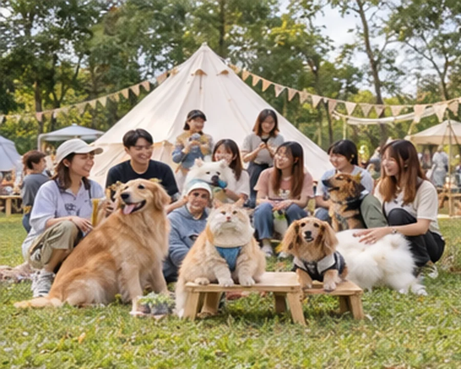

PET-FRIENDLY FOREST PARTY
適合毛孩生日、狗狗聚會與寵物家庭日。兩片草地可自由活動與聚餐，熱氣球室內活動空間讓人與毛孩在天氣變化時也能舒服休息。

活動包場
使用時段為 15:00～24:00，20 人內都歡迎，停車空間可安排 6 台一般自小客車。
PET PARTY IDEAS
依毛孩個性分時段活動，讓熟悉彼此的毛孩奔跑、嗅聞與探索。
兩片草地皆有戶外廚房，可安排主人用餐與毛孩生日儀式。
熱氣球室內活動空間有冷氣、電視與 Apple TV，適合休息、聊天與播放影片。
請自備牽繩、飲水、清潔袋與熟悉用品，並隨時留意毛孩狀態。
預約時請提供毛孩數量、體型、個性與是否容易緊張或追逐。
排泄物請立即清理；22:00 後進入寧靜時段並降低聲量。
活動主要使用熱氣球冷氣室內活動空間與兩片草地，另一處室內空間會貼心保留作為臨時置物區。是否適合不牽繩活動，仍請飼主依現場狀況與毛孩個性安心判斷。